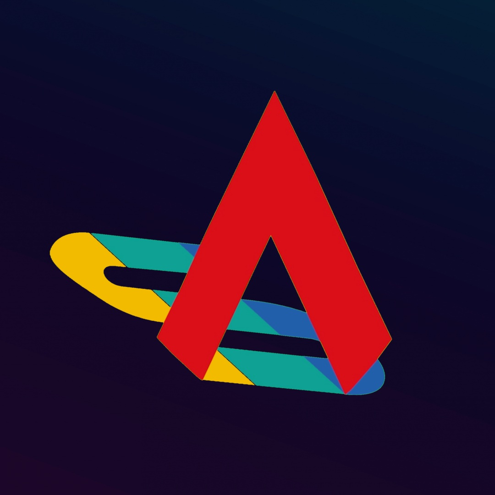
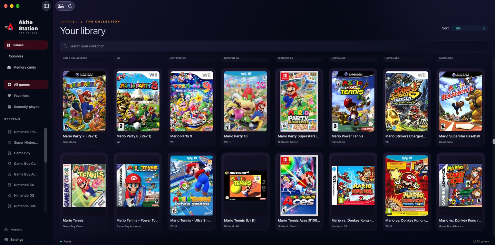

◫
Unified Library
Browse supported systems and organize your collection from a single native interface.

Akito Station DownloadAkito Station brings your user-provided game library into one polished macOS experience with unified browsing, organization, customization and launch workflows.
Akito Station does not include games, ROMs, BIOS/firmware, encryption keys, console software, PKG files, or third-party emulator binaries.

Browse supported systems and organize your collection from a single native interface.
A desktop-first experience designed to feel at home on modern Apple Silicon Macs.
Customize the experience while keeping your games and user-supplied components under your control.
PRO is a supporter membership for people who want to help fund continued Akito Station development. PRO members receive early access to upcoming Akito Station builds and updates before their general public release.
PRO applies to Akito Station itself. It does not provide third-party games, firmware, keys, console software, or emulator binaries.
Public releases are distributed separately from PRO early-access builds. Add your official GitHub release URL here before publishing.
Support Akito Station development and unlock PRO membership.
Akito Station PRO Membership
No. Users are responsible for providing and using their own content in accordance with applicable licenses and law.
No. The public distribution does not provide those materials. Where third-party components are required, users must obtain and use them independently and lawfully.
PRO is a supporter membership that helps fund development and provides early access to upcoming Akito Station builds and updates before general public release.
No. Akito Station has a public release separate from the optional PRO supporter membership.